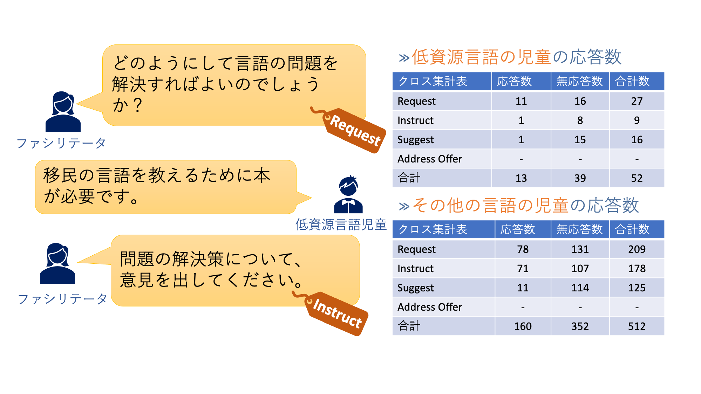

コラボレーションテクノロジー
機械翻訳組み込みツール、文化差検出、ファシリテーションエージェントなど、異文化コラボレーションを支援するツールやサービスの開発に取り組んでいます。

子どもたちの異文化コラボレーションのファシリテーション分析
また、子供向けワークショップなどの異文化コラボレーションイベントでのフィールドスタディも実施しました。 私たちは民族誌学的研究を実施し、子供たちの多言語チャットログを分析し、各タイプのファシリテーション技術が子供たちの反応に与える影響を調べました。
[Motozawa, Mizuki, Yohei Murakami, Mondheera Pituxcoosuvarn, Toshiyuki Takasaki, and Yumiko Mori. "Conversation Analysis for Facilitation in Children’s Intercultural Collaboration." In Interaction Design and Children, pp. 62-68. 2021.]

異文化コラボレーションのためのファシリテーターエージェント
機械翻訳を介したコミュニケーションにおいて、特に低リソース言語話者にとって、機械翻訳が理解しにくいメッセージを生成することが何度かありました。本研究では、会話に参加することが困難なユーザがいることを検知し、そのユーザを支援する知的エージェントを開発する。

画像特徴量に基づく文化差検出
機械翻訳の品質向上により言語の壁はなくなりつつありますが、文化の違いにより会話に誤解が生じる可能性があります。例えば、日本人がよく食べる“ゴボウ“を英語に翻訳しても海外の人は日本人が思っているものと違うものをイメージします。 日本でイメージされる“ゴボウ“は植物の根ですが、海外では棘をもった植物をイメージします。これらは同じ植物だが、日本ではその植物の根を食べる文化がある一方で、海外ではそのような文化がないためこのような結果になります。 このような文化差を解消するために深層学習を使って画像から得られる特徴ベクトルを抽出し、その類似性に基づいて文化差検出する手法を提案しています。
[Nishimura, Ikkyu, Yohei Murakami, and Mondheera Pituxcoosuvarn. "Image-based detection criteria for cultural differences in translation." In International Conference on Collaboration Technologies and Social Computing, pp. 81-95. Springer, Cham, 2020.]

異言語間の分散表現を用いた文化差検出/未知語対訳作成
多言語コミュニケーションにおいて、翻訳は合っていても、文化差によって会話の齟齬が生まれてしまう場合があります。 たとえば、「卵」の食べ方があります。日本では卵を生で食べる食文化がありますが、生で食べる文化のない国も存在します。 このような文化差を検出し、ユーザに知らせることを目的に研究しています。 具体的な手法としては、言語ごとに書かれている大量のテキストの内容の違いから文化差を検出します。 研究テーマにある分散表現とは、テキストの単語の出現位置から単語のベクトルを一意に作成する技術のことです。 このベクトルを異言語間で比較し、ベクトルが大きく異なるならば、文化差ありと判定します。 また、文化差によってそもそも翻訳先言語に対訳が存在しない文化固有の単語（未知語）も存在します。 この未知語のベクトルに近い翻訳先言語の単語を組み合わせることで対訳を生成する技術も研究しています。

マスク言語モデルに基づく物体の印象の文化差検出
文化差がコミュニケーションの齟齬を生んでしまう場合がある.文化差による，ある物体に対する印象の違い。マスク言語処理を用いて，コーパス上の使われ方の違いから物体の印象の文化差を検出。